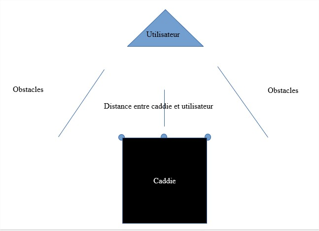
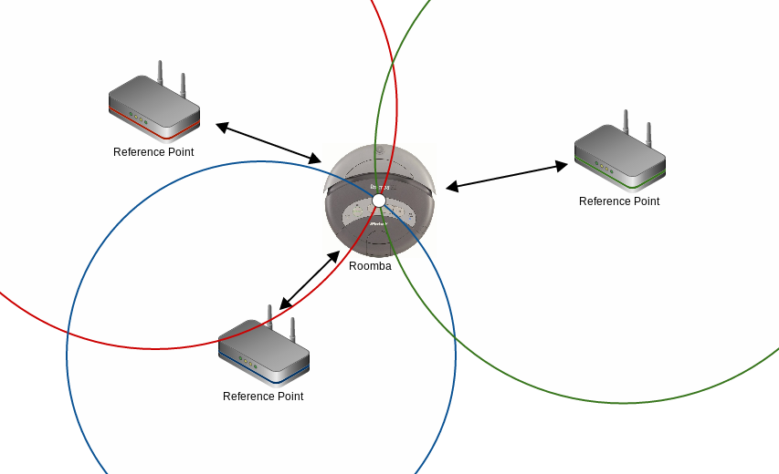

Problèmes potentiels:
2. Triangulation Bluetooth:

Problèmes potentiels:
3. Mode de suivi final:
Le caddie doit respecter 2 conditions :
- Se trouver entre 40 et 60 cm de l'utilisateur lorsque celui-ci est en mouvement et 10 cm à l'arrêt afin que l'utilisateur puisse déposer ses courses.
- Suivre le trajet de l'utilisateur enregistré sur la centrale inertielle.
Détails :
- La distance étant assez minime, personne ne peut passer entre le caddie et l'utilisateur. Autrement dit, le capteur US détecte en temps réel la distance entre lui et l'utilisateur. Ainsi le caddie est sûr de suivre l'utilisateur. Cette valeur est ensuite transmise au code qui l'analyse pour savoir si le caddie doit accélérer ou non.
- La centrale inertielle projette en temps réel sur un plan en 2 dimensions les positions de l'utilisateur et donc par conséquent le tracé à suivre pour le caddie. La centrale inertielle possédant une précision au centième de millimètre près, le tracé suivi par le caddie est assez précis pour que le caddie ne rentre pas dans les rayons lorsque l'utilisateur les frôle.
Schéma de la distance de sécurité

Problèmes potentiels :
- Le caddie peut potentiellement rentrer dans quelque chose sur les côtés.
Les capteurs de contact peuvent remédier à ce problème, cependant, ils ne sont utiles quand ultime recours.
2 capteurs US pourraient être placés pour établir les distances qui sépareraient le caddie d'un obstacle.
Cette solution est en effet plus sécuritaire mais engendre beaucoup trop de contraintes et de nouvelles problématiques à résoudre notamment au niveau du programme.
- Si quelqu'un passe entre le caddie et l'utilisateur le caddie va prendre l'homme qui passe pour l'utilisateur et va donc transmettre au caddie une distance fausse. Ce problème se présente notamment lors du démarrage car le temps que le caddie atteigne sa vitesse de croisière, l'écart entre lui et l'utilisateur se creuse et donc que quelqu'un passe entre aussi.
- Si l'utilisateur rentre dans un rayon, le caddie aussi.
- Si l'utilisateur tourne à angle droit dans un rayon, le capteur US ne détecte plus l'utilisateur.
- Si l'utilisateur se retourne à 360 °, cela peut entraîner une perte de signal pour la capteur US.
Rajouter les autres systèmes envisagés puis écartés. Rajouter les différents devis (avant et après)
Cablages électronique
- Se trouver entre 40 et 60 cm de l'utilisateur lorsque celui-ci est en mouvement et 10 cm à l'arrêt afin que l'utilisateur puisse déposer ses courses.
- Suivre le trajet de l'utilisateur enregistré sur la centrale inertielle.
Détails :
- La distance étant assez minime, personne ne peut passer entre le caddie et l'utilisateur. Autrement dit, le capteur US détecte en temps réel la distance entre lui et l'utilisateur. Ainsi le caddie est sûr de suivre l'utilisateur. Cette valeur est ensuite transmise au code qui l'analyse pour savoir si le caddie doit accélérer ou non.
- La centrale inertielle projette en temps réel sur un plan en 2 dimensions les positions de l'utilisateur et donc par conséquent le tracé à suivre pour le caddie. La centrale inertielle possédant une précision au centième de millimètre près, le tracé suivi par le caddie est assez précis pour que le caddie ne rentre pas dans les rayons lorsque l'utilisateur les frôle.
- Le caddie peut potentiellement rentrer dans quelque chose sur les côtés.
Les capteurs de contact peuvent remédier à ce problème, cependant, ils ne sont utiles quand ultime recours.
2 capteurs US pourraient être placés pour établir les distances qui sépareraient le caddie d'un obstacle.
Cette solution est en effet plus sécuritaire mais engendre beaucoup trop de contraintes et de nouvelles problématiques à résoudre notamment au niveau du programme.
- Si quelqu'un passe entre le caddie et l'utilisateur le caddie va prendre l'homme qui passe pour l'utilisateur et va donc transmettre au caddie une distance fausse. Ce problème se présente notamment lors du démarrage car le temps que le caddie atteigne sa vitesse de croisière, l'écart entre lui et l'utilisateur se creuse et donc que quelqu'un passe entre aussi.
- Si l'utilisateur rentre dans un rayon, le caddie aussi.
- Si l'utilisateur tourne à angle droit dans un rayon, le capteur US ne détecte plus l'utilisateur.
- Si l'utilisateur se retourne à 360 °, cela peut entraîner une perte de signal pour la capteur US.
Rajouter les autres systèmes envisagés puis écartés. Rajouter les différents devis (avant et après)